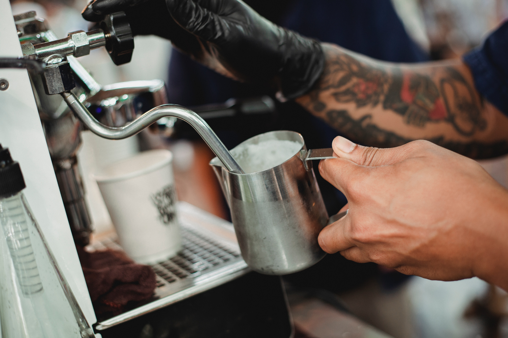
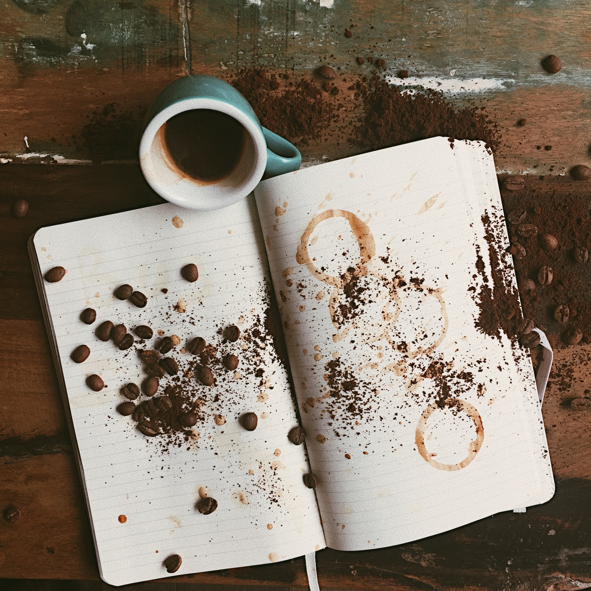

Here is a bit of info about coffee
An Ethiopian Legend
Espresso become worldwide can follow its legacy back hundreds of years to the old espresso woods on the Ethiopian level. There, legend says the goat herder Kaldi originally found the capability of these adored beans.
The story exceeds all expectations found espresso after he saw that in the wake of eating the berries from a specific tree, his goats turned out to be enthusiastic to the point that they would have rather not rest around evening time.
Kaldi detailed his discoveries to the abbot of the neighborhood cloister, who made a beverage with the berries and observed that it kept him alert through the extended periods of time of evening supplication. The abbot imparted his disclosure to different priests at the religious community, and information on the empowering berries started to spread.
As word moved east and espresso arrived at the Arabian landmass, it started an excursion which would bring these beans across the globe.
The Arabian Peninsula
Espresso development and exchange started on the Arabian Peninsula. By the fifteenth century, espresso was being filled in the Yemeni region of Arabia and by the sixteenth century it was known in Persia, Egypt, Syria, and Turkey.
Espresso was delighted in homes, yet additionally in the numerous public cafés — called qahveh khaneh — which started to show up in urban communities across the Near East. The prevalence of the cafés was unrivaled and individuals regularly visited them for a wide range of social action.
Not exclusively did the benefactors drink espresso and participate in discussion, yet they likewise paid attention to music, watched entertainers, played chess and kept current on the news. Cafés immediately turned out to be such a significant community for the trading of data that they were regularly alluded to as "Schools of the Wise."
With large number of pioneers visiting the sacred city of Mecca every year from everywhere the world, information on this "wine of Araby" started to spread.

Coffee Comes to Europe
European explorers to the Near East brought back accounts of a surprising dim dark drink. By the seventeenth century, espresso had advanced toward Europe and was becoming famous across the landmass.
Certain individuals responded to this new refreshment with doubt or dread, considering it the "harsh innovation of Satan." The nearby pastorate sentenced espresso when it came to Venice in 1615. The debate was incredible that Pope Clement VIII was approached to intercede. He chose to taste the refreshment for himself prior to settling on a choice, and observed the beverage so fulfilling that he gave it ecclesiastical endorsement.
In spite of such debate, cafés were rapidly becoming focuses of social action and correspondence in the significant urban communities of England, Austria, France, Germany and Holland. In England "penny colleges" jumped up, supposed on the grounds that at the cost of a penny one could buy some espresso and take part in animating discussion.
Espresso started to supplant the normal breakfast drink refreshments of the time — brew and wine. The individuals who drank espresso rather than liquor started the day alert and invigorated, and as anyone might expect, the nature of their work was extraordinarily improved. (We like to think about this a forerunner to the cutting edge office espresso administration.)

By the mid-seventeenth century, there were north of 300 cafés in London, a large number of which pulled in similar benefactors, including dealers, transporters, representatives and specialists.
Numerous organizations outgrew these specific cafés. Lloyd's of London, for instance, appeared at the Edward Lloyd's Coffee House.
The New World
During the 1600's, espresso was brought to New Amsterdam, later called New York by the British.
However cafés quickly started to show up, tea kept on being the inclined toward drink in the New World until 1773, when the settlers rebelled against a substantial assessment on tea forced by King George III. The revolt, known as the Boston Tea Party, would perpetually change the American drinking inclination to espresso.

"Coffee - the favorite drink of the civilized world."
-Thomas Jefferson
Plantations Around the World
As interest for the drink kept on spreading, there was furious contest to develop espresso outside of Arabia.
The Dutch at last got seedlings in the last 50% of the seventeenth century. Their first endeavors to establish them in Quite a while fizzled, yet they were effective with their endeavors in Batavia, on the island of Java in what is presently Indonesia.
The plants flourished and soon the Dutch had a useful and developing exchange espresso. They then, at that point, extended the development of espresso trees to the islands of Sumatra and Celebes.

Coming to Americans
In 1714, the Mayor of Amsterdam introduced an endowment of a youthful espresso plant to King Louis XIV of France. The King requested it to be planted in the Royal Botanical Garden in Paris. In 1723, a youthful maritime official, Gabriel de Clieu acquired a seedling from the King's plant. Notwithstanding a difficult journey — complete with awful climate, a saboteur who attempted to obliterate the seedling, and a privateer assault — he figured out how to move it securely to Martinique.
When planted, the seedling flourished, however it's credited with the spread of north of 18 million espresso trees on the island of Martinique in the following 50 years. Significantly more unbelievable is that this seedling was the parent of all espresso trees all through the Caribbean, South and Central America.
The popular Brazilian espresso owes its reality to Francisco de Mello Palheta, who was sent by the sovereign to French Guiana to get espresso seedlings. The French were not able to share, however the French Governor's significant other, enamored by his attractive features, provided him with an enormous bundle of roses before he left—covered inside were sufficient espresso seeds to start what is today a billion-dollar industry.
Preachers and explorers, dealers and homesteaders kept on conveying espresso seeds to new grounds, and espresso trees were planted around the world. Estates were set up in brilliant tropical backwoods and on tough mountain good countries. A few harvests thrived, while others were fleeting. New countries were set up on espresso economies. Fortunes were made and lost. Before the finish of the eighteenth century, espresso had become one of the world's most productive commodity crops. After raw petroleum, espresso is the most looked for product on the planet.